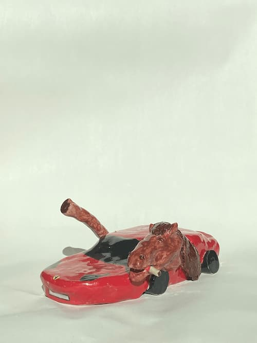

Min hest er lys brun med mørk man. Man kunne tro, at han er blød og dejlig i pelsen, men i virkeligheden er han ret hård og glat. Han er meget sød og venlig. Han er ikke den bedste til at løbe, og jeg vil nok sige, at han helst undgår det. Til gengæld er han ofte ret ubehagelig i trafikken – især i myldretiden. Jeg prøver at få ham til at falde lidt ned, og som regel hjælper en cigaret.
Flere heste? Klik her.
